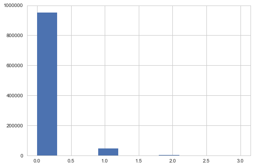

In [1]:
%pylab inline --no-import-all
import matplotlib as mpl
matplotlib.rcParams['image.origin'] = 'lower'
matplotlib.rcParams['image.interpolation'] = 'nearest'
# matplotlib.rcParams['axes.grid'] = False
# matplotlib.rcParams['axes.facecolor'] = 'white'
import seaborn as sns
sns.set_style('whitegrid')
import sys
import os
folder = '../../../../crispy'
print(folder)
if folder not in sys.path: sys.path.append(folder)
from crispy.params import Params
folder = '../../../crispy'
par = Params(folder)
cmap = 'viridis'
par.hdr
Populating the interactive namespace from numpy and matplotlib
../../../../crispy
Out[1]:
SIMPLE = T / conforms to FITS standard
BITPIX = 8 / array data type
NAXIS = 0 / number of array dimensions
EXTEND = T
COMMENT
COMMENT ************************************************************
COMMENT ********************** General parameters ******************
COMMENT ************************************************************
COMMENT
NLENS = 108 / # lenslets across array
PITCH = 0.000174 / Lenslet pitch (meters)
INTERLAC= 2 / Interlacing
PHILENS = 26.56505117707799 / Rotation angle of the lenslets (deg)
PIXSIZE = 1.3E-05 / Pixel size (meters)
LENSAMP = 0.5 / Lenslet sampling (lam/D)
LSAMPWAV= 660.0 / Lenslet sampling wavelength (nm)
FWHM = 2 / FHWM of PSFLet at detector (pixels)
FWHMLAM = 660.0 / Wavelength at which FWHM is defined (nm)
NPIX = 1024 / Number of detector pixels
DISPDIST= F / Use PISCES distortion/dispersion?
Constructing a fiducial frame with uniform electrons¶
In [2]:
flux = 5e-4
inttime = 100
size = 1000
photoelectrons = flux*np.ones((size,size))*inttime
from crispy.tools.detector import readDetector
# verify with Bijan that the CIC/dark doesn't contribute to this formula
# if par.lifefraction>0.0:
# photoelectrons[photoelectrons>0] *= np.minimum(np.ones(photoelectrons[photoelectrons>0].shape),1+par.lifefraction*0.51296*(np.log10(photoelectrons[photoelectrons>0])+0.0147233))
In [3]:
par.dark=0.0
par.CIC=0.0
average = photoelectrons+par.dark*inttime+par.CIC
print np.std(average)
print np.mean(average/inttime)
print np.mean(average/inttime)-par.dark-par.CIC/inttime
1.04083408559e-16
0.0005
0.0005
Electrons are generated following a Poisson process¶
In [4]:
# calculate electron generation in the CCD frame
if par.poisson:
atEMRegister = np.random.poisson(average)
else:
atEMRegister = average
print np.std(atEMRegister)
print np.mean(atEMRegister/np.float(inttime))
print np.mean(atEMRegister/np.float(inttime))-par.dark-par.CIC/inttime
plt.imshow(atEMRegister,cmap=cmap)
plt.grid(False)
plt.axis('off')
plt.colorbar(fraction=0.046, pad=0.04)
0.222903981831
0.00049878
0.00049878
Out[4]:
<matplotlib.colorbar.Colorbar at 0x118330bd0>

In [5]:
n, bins, patches = plt.hist(np.reshape(atEMRegister,-1),10)
num2 = len(atEMRegister[atEMRegister>1])
print "Percentage of pixels that are not 0 or 1: %.4f%%" % (np.float(num2)/size**2*100)
Percentage of pixels that are not 0 or 1: 0.1112%

In [6]:
# calculate the number of electrons after the EM register
par.EMGain=2000
if par.EMStats:
EMmask = atEMRegister>0
afterEMRegister = np.zeros(atEMRegister.shape)
afterEMRegister[EMmask] = np.random.gamma(atEMRegister[EMmask],par.EMGain,atEMRegister[EMmask].shape)
else:
afterEMRegister = par.EMGain*atEMRegister
print par.EMStats
print np.std(afterEMRegister/par.EMGain)
print np.mean(afterEMRegister/np.float(inttime))/par.EMGain
print np.mean(afterEMRegister/np.float(inttime))/par.EMGain-par.dark-par.CIC/inttime
n, bins, patches = plt.hist(np.reshape(afterEMRegister/par.EMGain,-1),10)
plt.figure()
plt.imshow(afterEMRegister/par.EMGain,cmap=cmap)
plt.grid(False)
plt.axis('off')
plt.colorbar(fraction=0.046, pad=0.04)
True
0.313627421142
0.000495855236325
0.000495855236325
Out[6]:
<matplotlib.colorbar.Colorbar at 0x121688950>


In [7]:
# add read noise
if par.RN>0:
afterRN = afterEMRegister+np.random.normal(par.PCbias,par.RN,afterEMRegister.shape)
# clip at zero
afterRN[afterRN<0]=0
else:
afterRN = afterEMRegister+par.PCbias
print par.RN
print par.PCbias
print np.std(afterRN/par.EMGain)
print np.mean((afterRN-par.PCbias)/np.float(inttime))/par.EMGain
print np.mean((afterRN-par.PCbias)/np.float(inttime))/par.EMGain-par.dark-par.CIC/inttime
n, bins, patches = plt.hist(np.reshape((afterRN-par.PCbias)/par.EMGain,-1),10)
plt.figure()
plt.imshow((afterRN-par.PCbias)/par.EMGain,cmap=cmap)
plt.grid(False)
plt.axis('off')
plt.colorbar(fraction=0.046, pad=0.04)
20.0
200
0.313779451227
0.000495641103332
0.000495641103332
Out[7]:
<matplotlib.colorbar.Colorbar at 0x122a8aa10>


In [8]:
# add photon counting thresholding
par.PCmode=True
par.threshold = 4.0
if par.PCmode:
# PCmask = afterRN>par.PCbias+par.threshold*par.RN
# afterRN[PCmask]=1.0 #(afterRN[PCmask]-par.PCbias)/par.EMGain
# afterRN[~PCmask]=0.
PCmask = afterRN>par.PCbias+par.threshold*par.RN
afterRN[PCmask]=1.0
afterRN[~PCmask]=0.
# STD = np.std(afterRN[PCmask])
# MEAN = np.mean(afterRN[PCmask])
# afterRN = afterRN > MEAN+STD
else:
afterRN -= par.PCbias
afterRN /= par.EMGain
print par.PCmode
print par.threshold
print np.std(afterRN)
print np.mean((afterRN)/np.float(inttime))
print np.mean((afterRN)/np.float(inttime))-par.dark-par.CIC/inttime
n, bins, patches = plt.hist(np.reshape(afterRN,-1),10)
plt.figure(figsize=(15,12))
plt.subplot(121)
atEMRegister[atEMRegister>1]=1
plt.imshow(atEMRegister,cmap=cmap)
plt.grid(False)
plt.axis('off')
plt.colorbar(fraction=0.046, pad=0.04)
plt.subplot(122)
plt.imshow(afterRN,cmap=cmap)
plt.grid(False)
plt.axis('off')
plt.colorbar(fraction=0.046, pad=0.04)
from astropy.io import fits
out = fits.HDUList(fits.PrimaryHDU(atEMRegister))
out.writeto("/Users/mrizzo/IFS/atEMRegister.fits",clobber=True)
out = fits.HDUList(fits.PrimaryHDU(afterRN))
out.writeto("/Users/mrizzo/IFS/afterRN.fits",clobber=True)
True
4.0
0.211422524342
0.00046899
0.00046899


In [9]:
print np.sum(afterRN-atEMRegister)
print np.sum(atEMRegister)
-1849.0
48748